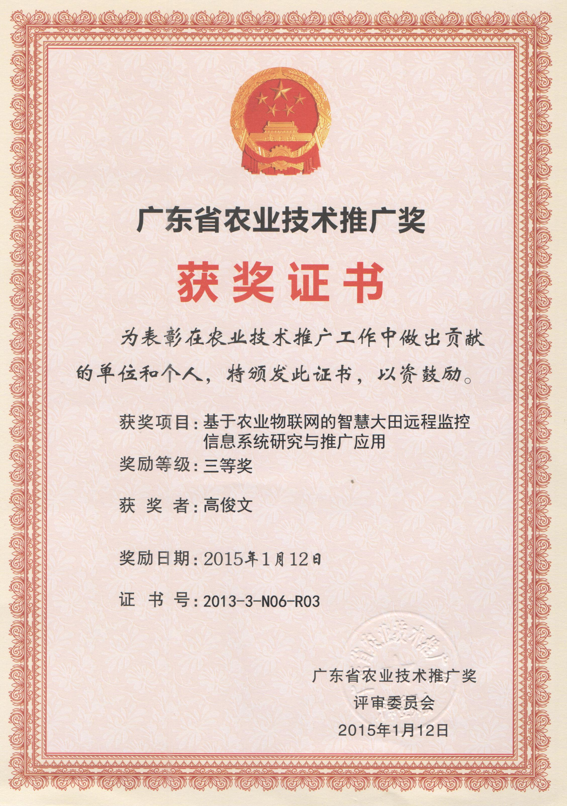
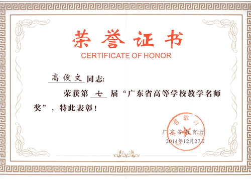

当前位置：首页 > 建设团队 > 项目负责人
实践基地学校负责人情况
|
基 地 负 责 人 情 况 |
|||||||
| 姓名 | 高俊文 | 性别 | 男 | 出生年月 | 1966.12 | 民族 | 汉 |
| 单位 职务 |
广东农工商职业技术学院教务处处长 | 专业技术 职务 |
教授 | 学历/学位 | 研究生/博士 | 毕业院校 | 华南理工大学 |
| 通讯 地址 |
广州市天河区粤垦路198号 | 邮编 | 510507 | ||||
| 电子 邮箱 |
jwgao@gdaib.edu.cn | 联系电话 | 020-85230355 | ||||
| 主要 职责 |
汽车类专业校企合作基地的建设提供技术上、经济上、制度上的相关支持，确保实践基地得以持续、健康、稳定的发展。 |
||||||
| 主要 经历 |
现任广东电子协会电子教育分会副主任委员，广州市骏怡汇汽车科技有限公司技术顾问，广东企业科技特派员。 |
||||||
负责人佐证材料
 